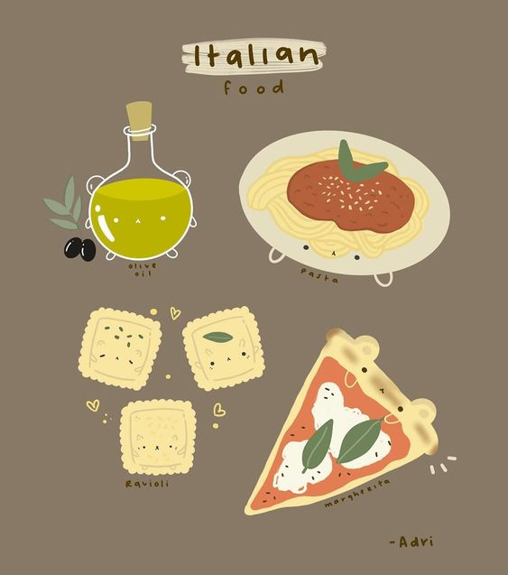
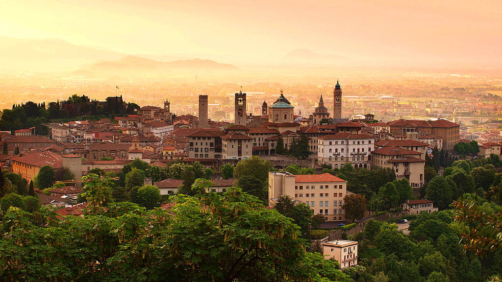

Italian Cuisine
If you find yourself in Italy walking the streets you are going to get very hungry very fast. The most popular sorts of food in Italy are pastas, meats, bread, cheese, wine, pizza, and desserts like tiramisu, and gelato.You will find no shortage of restaurants and if you are on the go there are many street vendors with multi-cultural options. In Italian culture different foods are eaten at certain times of the day and you can always have pasta for dinner. The tomato is a large part of italian cuisine and the basis for many of the traditional Italian dishes.
Best Restaurants in Italy
- Uliassi (Senigallia, Ancona)
- Da Vittorio (Brusaporto, Bergamo)
- St.Hubertus (San Cassiano, Bolzano)
- Enoteca (Firenze)
- Piazza Duomo (Alba, Cuneo)
- Dal Pescatore (Canneto sull'Oglio, Mantova)
- Reale (Localita Casadonna, Castel di Sangro, L'Aquila)
- Le Calandre (Rubano, Padova)
- Osteria Francescana (Modena)
- La Pergola dell'Hotel Rome Cavalieri (Roma)
